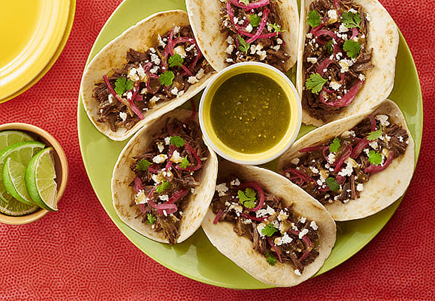

Barbacoa
Similar to Chipotle's® barbacoa. Great over nachos, in tacos, and burritos.
Ingredients

Ingridients
- 1 (3 pound) beef chuck roast, cut into 6 to 8 chunks
- salt and ground black pepper to taste
- 2 tablespoons vegetable oil
- ½ cup beef broth
- ¼ cup apple cider vinegar
- ¼ cup fresh lime juice
- 4 chipotle peppers in adobo sauce, chopped
- 5 cloves garlic, chopped
- 1 tablespoon ground cumin
- 1 tablespoon dried oregano
- ¼ teaspoon ground cloves
- 3 bay leaves
Steps
- Season beef chunks with salt and pepper on all sides.
- Heat oil in a large skillet over medium-high heat. Add beef in batches; cook until browned, about 1 minute per
side.
Transfer beef to a slow cooker.
- Combine beef broth, apple cider vinegar, lime juice, chipotle peppers, garlic, cumin, oregano, and cloves in a
bowl.
Season with salt and pepper and mix well. Pour over beef in the slow cooker. Stir in bay leaves.
- Cook on Low until beef is fork-tender, 8 to 10 hours.
- Discard bay leaves. Remove beef and shred using 2 forks. Return beef to the slow cooker to marinate in the sauce
for at
least 10 more minutes before serving.
Home